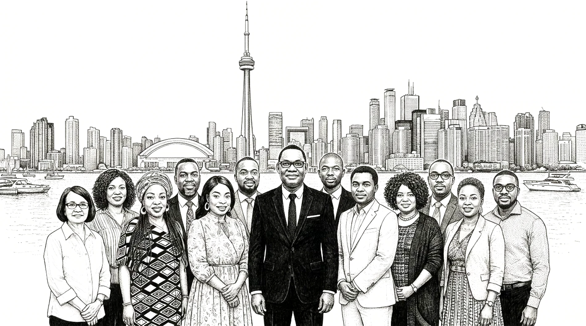
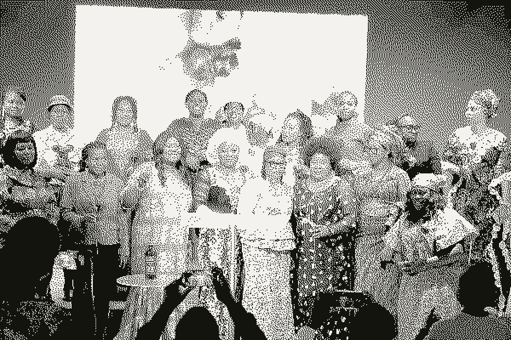
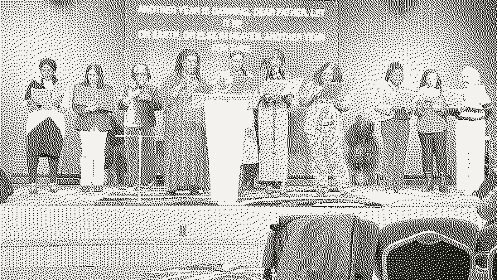
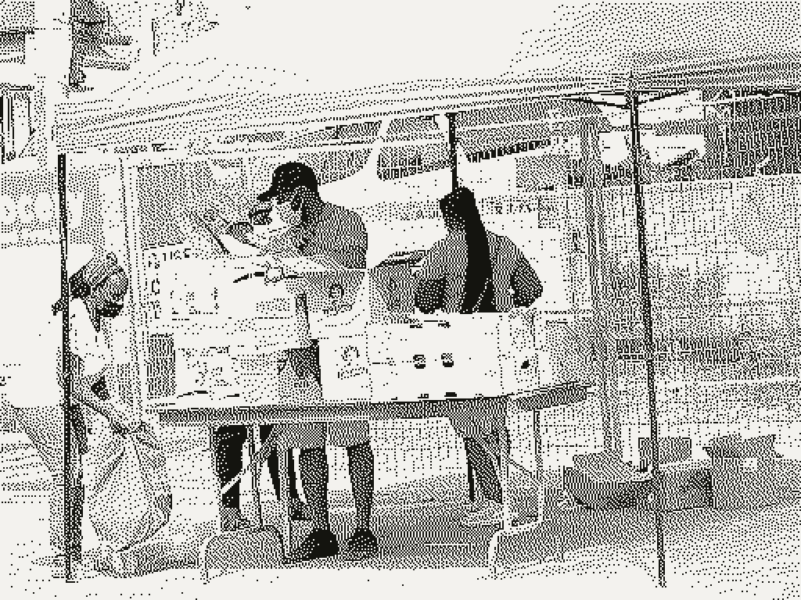
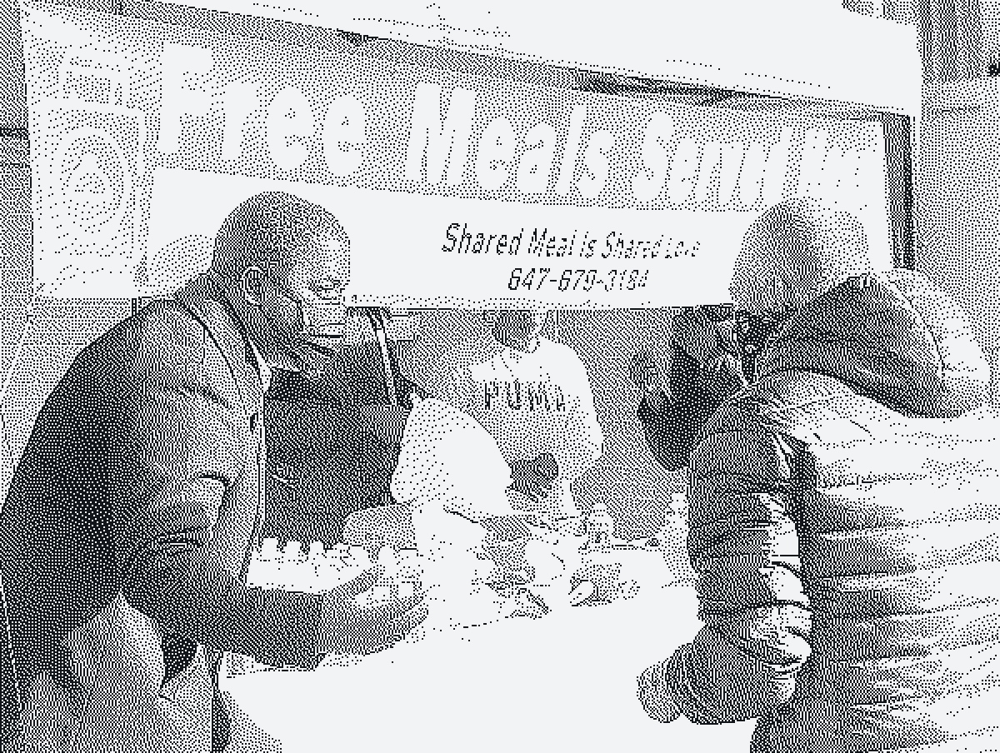
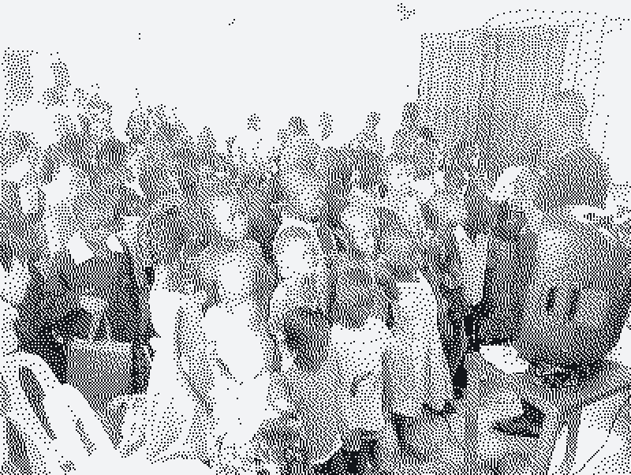
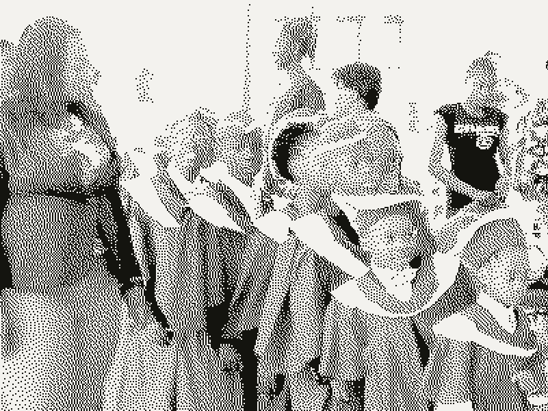

2006
A living room in Toronto
Five people gather in the living room of Pastor Felix Ayomike, a licensed and ordained preacher who arrived in Canada at twenty one and works as a pharmacist.

Love God. Love People. Pray.
We began in 2006 with five people in a living room in Toronto. Today we are a congregation drawn from every nation, meeting in a sanctuary that has held worship since 1856.
Doors open before 10:30. There is singing led by our choir and worship team, teaching from the Bible that you can use on Monday morning, and time given to prayer. Children go to their own classes after the singing.

Next service Sunday, 10:30 a.m. Services on YouTubeOur ministries are led by people who work full time as nurses, pharmacists, teachers, lawyers and engineers, and who give their evenings and weekends to this church.

Every week volunteers pack and hand out food and household supplies across the Greater Toronto Area through StepUp Community Support. Overseas we work with pastors in Nigeria and the Philippines on orphan care, schooling and skills training for young people.

Pastor Felix hosts Victory Life TV, carried on yesTV and archived on our YouTube channel, so that people well beyond Toronto can receive encouragement, inspiration and hope.
In the 1800s missionaries carried Christianity from Britain into West Africa. In 2006 a Nigerian pharmacist started a church in his living room in Toronto. Ten years later that church walked into a building the Anglicans had raised in 1856.
Five people gather in the living room of Pastor Felix Ayomike, a licensed and ordained preacher who arrived in Canada at twenty one and works as a pharmacist.
The fellowship outgrows the room, spends a season in a conference room at the Comfort Inn, then takes a worship centre of its own. It fills with young couples from different ethnic backgrounds.
The congregation acquires a red brick church that Anglicans raised in 1856. The faith Britain sent into West Africa comes back through the door of a Canadian parish church, carried by the people it was sent to.
Thirteen ministry leaders who are also nurses, doctors, pharmacists, lawyers and professors. Food handed out every week across the Greater Toronto Area. Partners in Nigeria and the Philippines.
The faith travelled one way for a century and a half, and then it travelled back. It now gathers in the room that sent it.Read the full history
We are non denominational and charismatic. We believe the gifts and power of the Holy Spirit did not stop with the first century, and that they are available to believers today.
God the Father is infinite and personal, perfect in holiness, wisdom, power and love. He hears and answers prayer.
His deity, virgin birth, sinless life, miracles, atoning death, bodily resurrection, ascension, and his return in power and glory.
His present ministry enables believers to live godly lives. His power and his gifts are available to believers now.
The Bible is the only inspired, infallible and authoritative Word of God.
The shed blood of Christ is the sole basis for the forgiveness of sin. Salvation comes through faith in his death and resurrection.
We believe the blessing of Abraham brings abundant life, and that this includes salvation, healing and provision.
Read the roster and you read the congregation. Doctors, nurses, pharmacists, lawyers, professors and business owners, most of whom came to Canada from somewhere else, and all of whom serve this church around a full working week.
Lead Pastor
Pharmacist, business owner. Raised in Nigeria, came to Canada at 21.
Leadership and Men's Ministry
Hudson's Bay Company
Church Administrator
Supply chain planner, food processing
Media Technology and Youth
Medical doctor
Women's Ministry
Healthcare worker. Serving since 2011.
Music Ministry
Registered nurse and clinical care coordinator
Women's Ministry
Community pharmacist. Serving since 2007.
Business Growth and Fellowship
Owner and president of a logistics company
Community Outreach and Evangelism
Educator. Came from Nigeria in 2018.
Innovation and Media Technology
College professor and IT consultant
Children's Ministry
Educator. Serving since 2017.
Program Coordinator
Lawyer. Serving since 2018.
Events Coordinator
RECE and childcare centre supervisor. Ten years of service.
Our neighbourhood sits in one of the most diverse and most pressured corners of Toronto. The work below is what our mission statement looks like on a Tuesday.

Weekly distribution of food and household supplies, with counselling and mentorship offered alongside, to meet the tangible needs of people in our local community.
stepuptoserve.com
We work with local pastors on church planting and discipleship, and support orphans, seniors and families with food, clothing, schooling and skills training for young people.

We intend to extend this work to Ghana, Sudan, Sierra Leone, Jamaica, Haiti, and to First Nations communities here in Canada.
A free guide
Victory Church International
North York, Toronto
A free guide with one page for every day of the week. Written for people who want to pray but are not sure how to begin. Tell us where to send it and it is yours.
Come as you are. There is no dress code, nobody will single you out, and you can sit at the back and just watch if that is what you need.
10:30 a.m. to 12:30 p.m.
Unit 8, 2400 Finch Ave West
North York, ON M9M 2C8
Parking in the complex is difficult. We advise people to park in the plaza by the Shell gas station.
Your giving supports the weekly food distribution here in Toronto, and orphan care, schooling and skills training for young people in Nigeria and the Philippines.